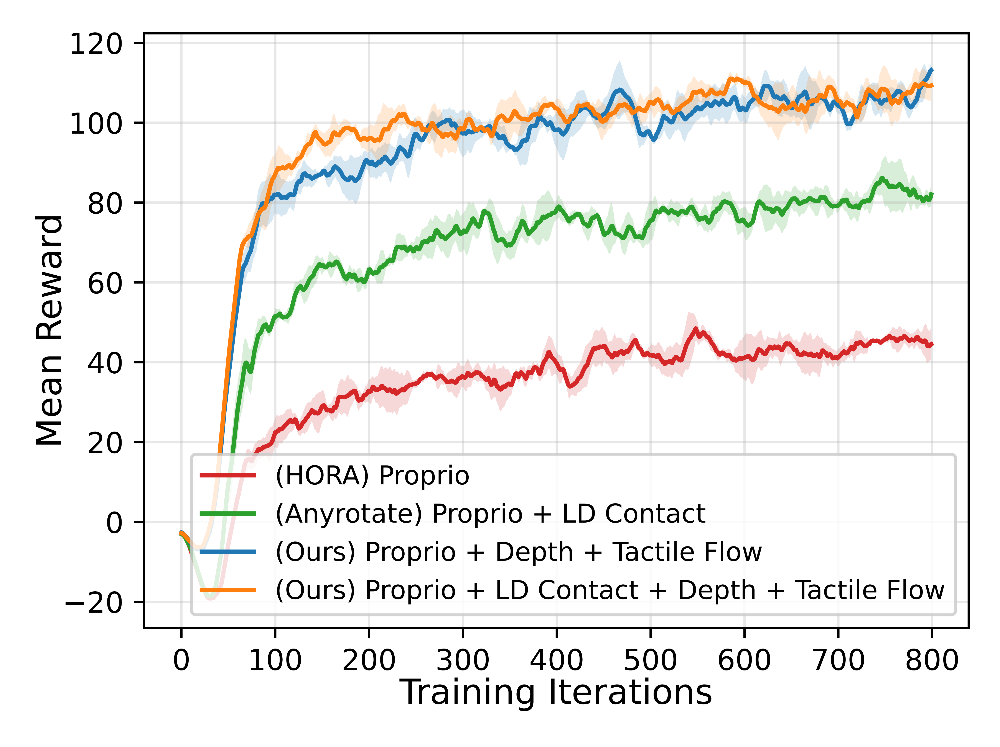

Overview of multimodal tactile policy learning for dexterous in-hand manipulation. To evaluate the benefit of our rich tactile observations, unknown random force and torque perturbations are applied to the manipulated object, making the task more challenging and requiring robust and informative tactile feedback.
Main Results

(More experimental results will be released in the paper.) Training performance with different policy input modalities. The curves report the mean reward averaged over five random seeds. We compare our high-dimensional tactile modalities against representative state-of-the-art baselines from prior in-hand manipulation work, including proprioception-only input following HORA and proprioception with low-dimensional contact information following AnyRotate. Policies using the proposed high-dimensional tactile modalities converge faster and achieve higher final reward, demonstrating the benefit of richer tactile observations for policy training.